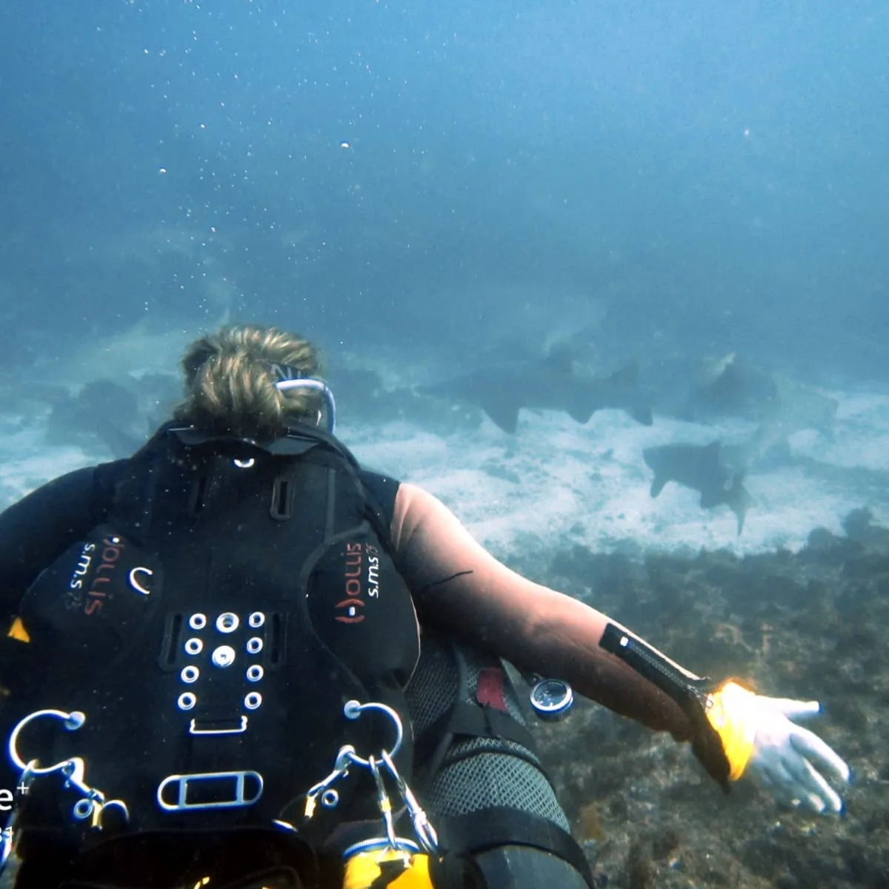

Pumpkin Pie

Description
Way back in 2016/2017 I lived, dived, partied and worked in Sodwana Bay for 9 months. Corlia, who I worked for,
at Reefteach used to make this for the guests on a regular basis. The staff always got the leftovers, and if we were really lucky we'd get a whole pie to
ourselves. It remains my favorite side to this day. More of a dessert, but it goes really well with some "braaivleis" too.
Ingredients
- 3 cups pureed pumpkin
- 1 cup self-raising flour
- 1 cup white sugar
- 1 cup cream
- 125ml melted butter
- 2 eggs
- 1/2tsp baking powder
- Pinch of salt
- Cinnamon sugar
Steps
- Preheat oven to 180C
- Mix pureed pumpkin with butter and pinch of salt
- Mix all ingredients together in a bowl
- Add to a prepared oven dish
- Sprinkle cinnamon sugar over the top. Measure with your heart not your mind.
Home